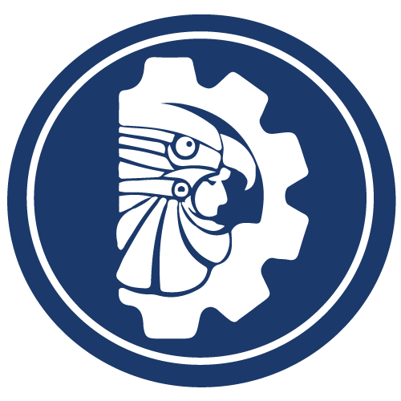

Misión
BorradorAcercar a los estudiantes del Instituto Tecnológico de Veracruz a la computación como práctica: aprender haciendo en talleres, retos y proyectos, y conectarlos con la red internacional de IEEE Computer Society.
 Únete
Únete
Computación que se aprende haciendo. Somos el capítulo estudiantil de IEEE Computer Society en el Instituto Tecnológico de Veracruz, fundado en 2026. Lo único que pedimos es participación.
Acercar a los estudiantes del Instituto Tecnológico de Veracruz a la computación como práctica: aprender haciendo en talleres, retos y proyectos, y conectarlos con la red internacional de IEEE Computer Society.
Ser la comunidad de computación de referencia del Tec de Veracruz: el lugar donde cualquier estudiante, de cualquier carrera, encuentra con quién construir y un camino para crecer como profesional.
Misión, visión, objetivos y valores redactados a partir de la guía de identidad de IEEE Computer Society. Pendientes de aprobación de la mesa directiva.
Objetivos
Lo que el capítulo se propone desde su primer semestre.
Organizar talleres prácticos en las siete áreas del capítulo, en los que cada persona termine con algo funcionando.
Formar equipos que construyan proyectos reales durante el semestre y los presenten a la comunidad del Tec.
Preparar equipos para concursos de programación como IEEEXtreme.
Vincular a los estudiantes con egresados, profesionales, empresas de la región y otros capítulos de IEEE.
Dar experiencia de organización y liderazgo a quienes coordinan actividades y equipos.
Que cualquier estudiante pueda participar sin experiencia previa: lo único que pedimos es participación.
Valores
Cuatro ideas que guían cada actividad del capítulo.
Se aprende estando: en la actividad, en el equipo, en la entrega.
Quien sabe algo lo enseña; quien empieza pregunta sin pena.
Terminar lo que se empieza y hacerlo bien.
Somos parte de una red que reúne a la computación de todo el mundo.

IEEE Computer Society
Con la participación de ingenieros y científicos de la computación, académicos y profesionales de la industria de todas las áreas de la computación, IEEE Computer Society (CS) marca la pauta en la formación y la vinculación que impulsan el avance tecnológico global. A través de conferencias, publicaciones y programas, y reuniendo a líderes de la ciencia y la ingeniería de la computación en cada etapa de su carrera para dialogar, debatir y colaborar, IEEE CS impulsa, da forma y orienta el futuro no solo de sus miembros, sino de toda la industria, y abre nuevas oportunidades para servir mejor a nuestro mundo.
Texto institucional de IEEE Computer Society, de su guía de identidad.
Nuestra casa
El capítulo vive en el Instituto Tecnológico de Veracruz, parte del Tecnológico Nacional de México, en el puerto de Veracruz. Las actividades son en el campus y, cuando conviene, en línea.



Redes del capítulo
Cada evento se anuncia en nuestras redes con fecha, lugar y registro. Escríbenos por mensaje directo si quieres entrar a un equipo.